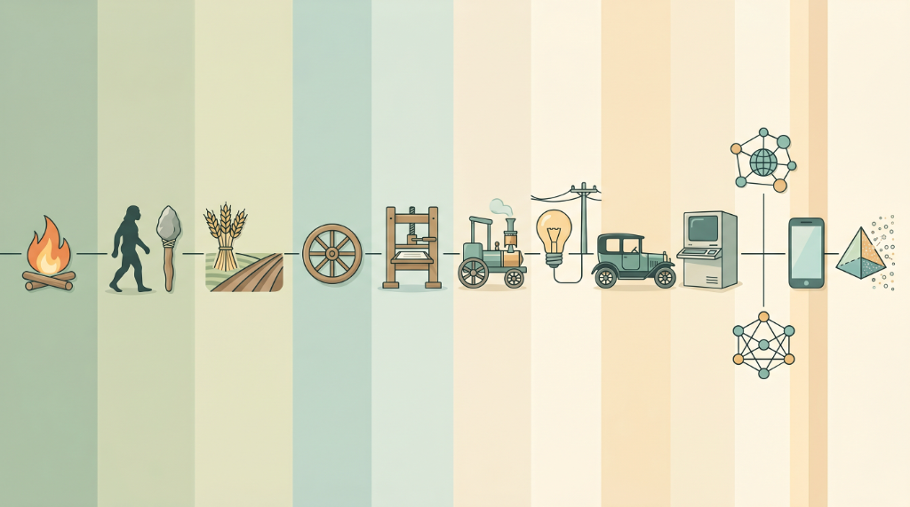
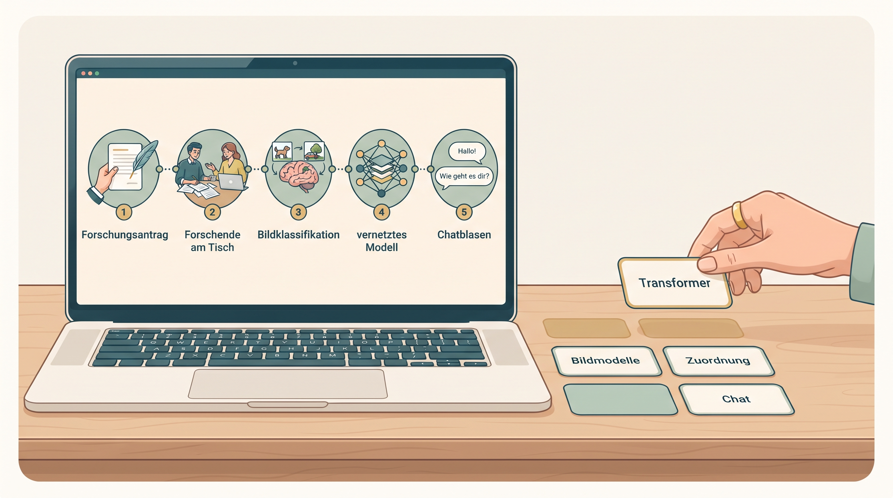
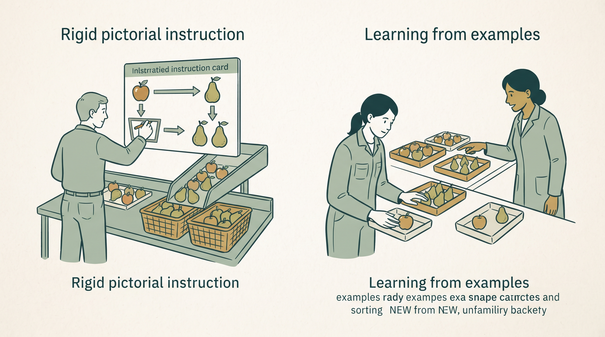
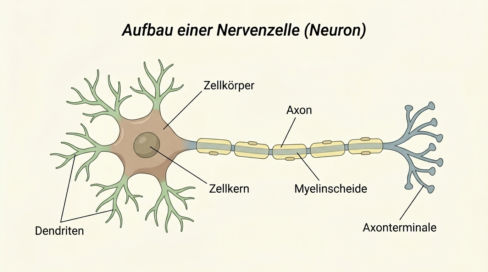
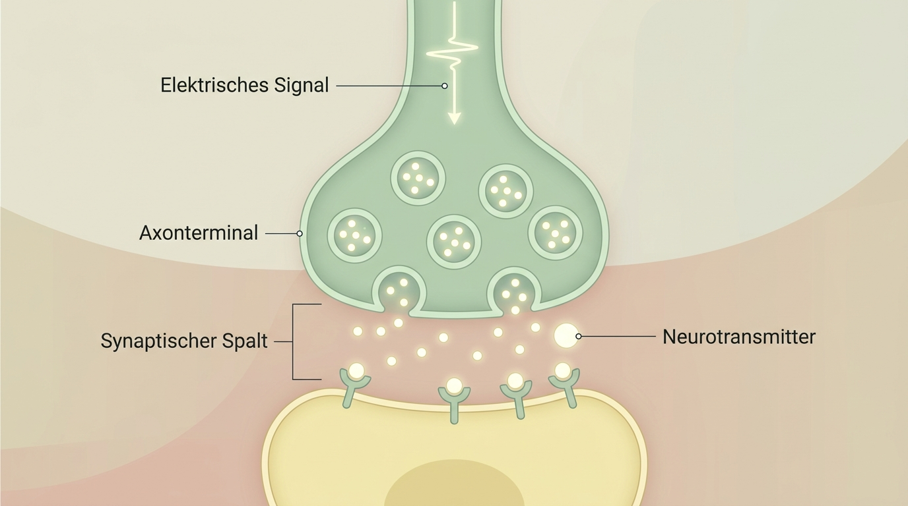
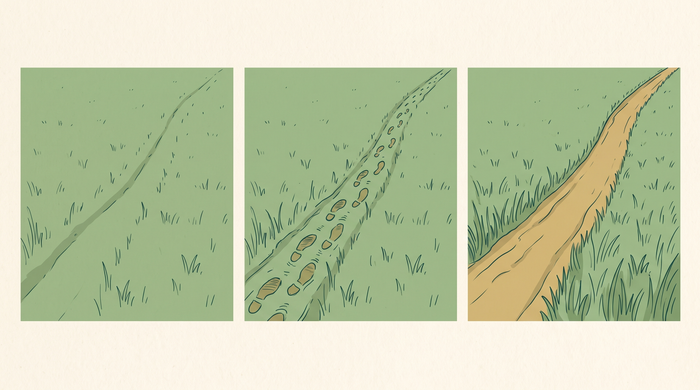
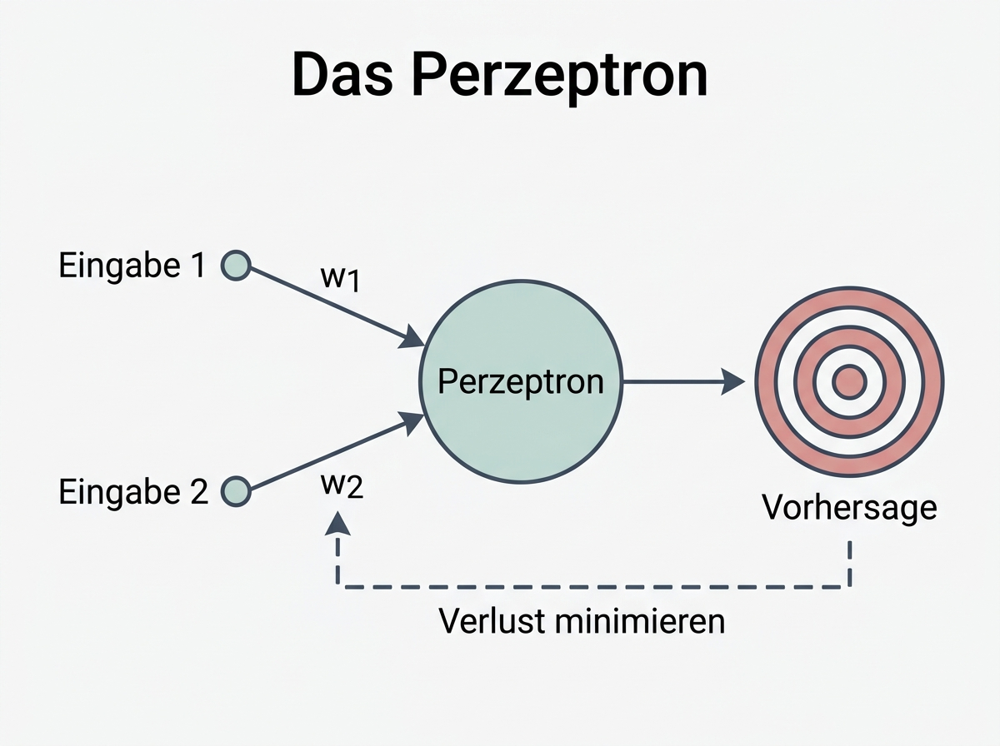
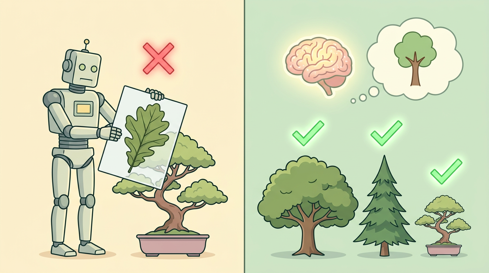
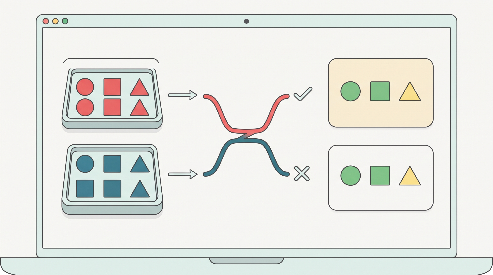
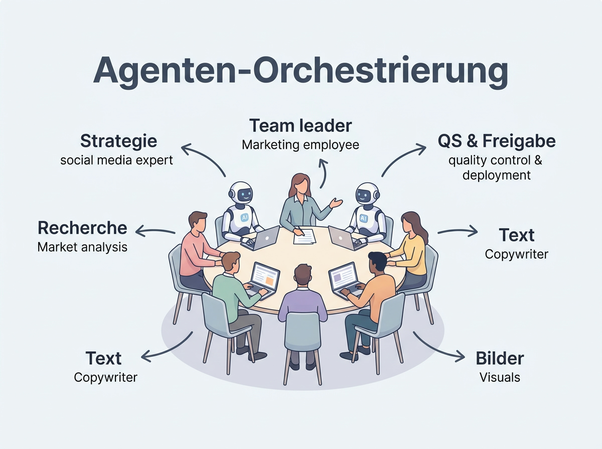

Zeitreise
Interaktive HTML-Präsentation
KI & DATA SCIENCE · WOCHE 02
Verstehen. Bauen. Prüfen.
Prof. Dr. Mathias Engel

Interaktive HTML-Präsentation
Sortierer-Simulation
Mitarbeiter und Grenzen
Anmelde-Mockup
Excel-Pilotmodell
W07: Projekt 1 live zeigen und Entscheidungen begründen.
Kulturtechniken: Feuer, Landwirtschaft, Schrift und Buchdruck verändern Alltag und Zusammenarbeit.
Industrialisierung: Maschinen übernehmen körperliche Arbeit; Computer und Netze verändern Informationsarbeit.
Heute: KI erweitert die Verarbeitung und Erzeugung von Informationen – sie steht in dieser langen Werkzeuggeschichte.
Symbolbild: keine maßstäbliche Zeitachse und keine fachlich genaue Frühgeschichte.
McCarthy und Kollegen schlagen ein Forschungsprojekt für Sommer 1956 vor.
Das geplante Sommerprojekt wird zum historischen Bezugspunkt der KI-Forschung.
Ein tiefes neuronales Netz erreicht einen großen Fortschritt bei ImageNet-Bildklassifikation.
Attention Is All You Need stellt eine auf Attention basierende Architektur vor.
ChatGPT wird am 30. November als öffentlich nutzbarer Forschungsprototyp vorgestellt.
Dartmouth: Antrag 1955, Sommerprojekt 1956 · Transformer und ChatGPT sind nicht dasselbe.
Welche Entwicklungen erkennt Ihr wieder? Welche Aussage würdet Ihr mit einer Quelle überprüfen?
Video direkt öffnen ↗Erwartung: Eine richtige Zeitleiste erklärt Unterschiede, nicht nur Jahreszahlen.
Produkt: Eine HTML-Präsentation mit Zeitreise und Zuordnungsspiel.
Vorgehen: Erwartung notieren → Prompt kopieren → erzeugen → Gegenprobe.
Abgabe: Datei + „zeigt / simuliert / geprüft“.

Eigenständig arbeiten · freiwillig vergleichen · Rückfallbeispiel öffnen ↗
1. Vollständigen Prompt kopieren.
2. In ChatGPT einfügen; Produkt erzeugen lassen.
3. Lokal öffnen und fachlich prüfen.
Gegenprobe: Prüft 1955/1956 und zwei falsche Zuordnungen im Spiel.
Begründen: Was stimmt – was simuliert die Datei nur?
Verbessern: Einen konkreten Fehler korrigieren.
Regelprogramm: „Wenn Rechnung über 1.000 €, zur Freigabe.“ Ein Mensch legt den Entscheidungsweg fest.
Lernendes Modell: Aus markierten Spam-/Nicht-Spam-Mails werden Muster gelernt; neue Mails werden eingeschätzt.
Unterschied: Nicht jede Regel wird einzeln geschrieben. Daten, Lernziel und anschließende Tests bestimmen das Modell.

Ein gelerntes Modell läuft weiterhin in programmierter Software; Regeln und Modelle lassen sich kombinieren.
Dendriten: empfangen Signale anderer Zellen. Am Zellkörper werden viele Einflüsse integriert.
Axon: leitet ein Aktionspotenzial zu den Endigungen; Myelin unterstützt die schnelle Weiterleitung.
Axonterminale: übergeben das Signal an weitere Zellen. Das Netz entsteht durch viele solcher Verbindungen.

Biologisches Vorbild – kein Bauplan eines digitalen „Neurons“.
1 · Ankommen: Das elektrische Signal erreicht die präsynaptische Endigung.
2 · Übergeben: Vesikel setzen Neurotransmitter frei; diese gelangen durch den synaptischen Spalt.
3 · Empfangen: Transmitter binden an Rezeptoren und verändern die Aktivität der nächsten Zelle – erregend oder hemmend.
Glutamat: häufig erregend, Lernen
GABA: meist hemmend
Dopamin: Motivation, Belohnungsverarbeitung
Acetylcholin: Aufmerksamkeit, Plastizität

Eine häufige Art der Signalübertragung; es gibt auch elektrische Synapsen.
Gedanke: Trägt Zelle A wiederholt dazu bei, Zelle B zu aktivieren, kann ihre Verbindung wirksamer werden.
Metapher: Ein vorhandener Trampelpfad wird durch wiederholte Nutzung deutlicher.
Grenze: Der Lernalgorithmus heutiger Netze ist nicht einfach die Hebbsche Regel.

Eingaben: Merkmale werden als Zahlen dargestellt. Gewichte bestimmen ihren Einfluss.
Rechnung: gewichtete Eingaben + Bias → Aktivierungsfunktion → Ausgabe.
Lernen: Ein Trainingsverfahren verändert Gewichte, um einen vorgegebenen Fehler zu verringern.

Vereinfachtes Perzeptron-Schaubild: Rückkopplung steht für Gewichtsanpassung, nicht für biologische Transmitter.
Training: Das Modell passt sich an bekannte Beispiele an. Es kann dabei auch unwichtige Details lernen.
Test: Neue, zurückgehaltene Beispiele zeigen, ob relevante Muster übertragen werden.
Beispiel: Wer „Baum = grün“ lernt, kann am kahlen Winterbaum scheitern. Ein guter Test enthält solche Gegenfälle.

Die Mensch-/Roboter-Szene ist eine Metapher: Auch KI kann generalisieren und Menschen können auswendig lernen.
Erwartung: Zwei Regeln können gleich gut zu den Trainingsdaten passen.
Produkt: Zwei Regeln vergleichen und unbekannte Testfälle prüfen.
Vorgehen: Erwartung notieren → Prompt kopieren → erzeugen → Gegenprobe.
Abgabe: Datei + „zeigt / simuliert / geprüft“.

Eigenständig arbeiten · freiwillig vergleichen · Rückfallbeispiel öffnen ↗
1. Vollständigen Prompt kopieren.
2. In ChatGPT einfügen; Produkt erzeugen lassen.
3. Lokal öffnen und fachlich prüfen.
Gegenprobe: Welche Regel scheitert bei Grün? Warum war das vorher nicht erkennbar?
Begründen: Was stimmt – was simuliert die Datei nur?
Verbessern: Einen konkreten Fehler korrigieren.
„Wo bleibt meine Bestellung?“ → Kategorie Lieferstatus.
Aus Anfrage und Bestellstatus einen passenden Text formulieren.
Status abrufen, Antwort prüfen, Freigabe einholen, erst dann senden.
KI ist der Oberbegriff; Machine Learning lernt aus Daten. Generieren und agentisches Handeln sind kombinierbare Fähigkeiten.
Skills: kurze Verfahren und Fachaufträge; Tools: erlaubte, möglichst klar prüfbare Aktionen.
Memory: dauerhaftes Mitarbeiterwissen; Kontext: die gerade ausgewählten Informationen.
Pensum: Zeit-/Schrittbudget. Grenzen: Aufgabenkomplexität und verfügbarer Kontext; bei Überforderung eskalieren.
Komplexe Kulanzentscheidung? Zum Menschen.
Didaktisches Profil, keine IQ-Skala. Ein kleines Modell kann für eine klar begrenzte Aufgabe genügen – das muss getestet werden.
Werkstatt-Memory: gemeinsame Regeln, Vorlagen und geprüfte Erfahrungen; Mitarbeiter behalten eigenes Fachwissen.
Projekt-Memory: Auftrag, Fallinformationen, Entscheidungen und Ergebnisse – getrennt von anderen Projekten.
Environment: verfügbare Tools, Sandbox und Zugriffsrechte. Der Ablauf regelt Übergaben, Prüfung und menschliche Freigabe.

Beispiel: Eingang → Antwort → Qualität. Mehr Mitarbeiter bringen zusätzliche Übergaben, nicht automatisch mehr Nutzen.
Erwartung: Ohne passenden Kontext oder Budget muss ein Worker eskalieren.
Produkt: Worker bewegen sich, bekommen Aufträge und erweitern Skills/Memory.
Vorgehen: Erwartung notieren → Prompt kopieren → erzeugen → Gegenprobe.
Abgabe: Datei + „zeigt / simuliert / geprüft“.
Eigenständig arbeiten · freiwillig vergleichen · Rückfallbeispiel öffnen ↗
1. Vollständigen Prompt kopieren.
2. In ChatGPT einfügen; Produkt erzeugen lassen.
3. Lokal öffnen und fachlich prüfen.
Gegenprobe: Vergebt einen Auftrag mit fehlendem Skill. Nach Upgrade erneut testen. Wächst Memory nur nach erfolgreicher Arbeit?
Begründen: Was stimmt – was simuliert die Datei nur?
Verbessern: Einen konkreten Fehler korrigieren.
Additiv: Ein Hilfetext kann eine unverständliche Anmeldung erklären.
Subtraktiv: Ein unnötiges zweites E-Mail-Feld lässt sich entfernen.
Entscheidend: Beide Varianten am gleichen Ziel prüfen: verständlich anmelden, nur benötigte Daten erfassen.
Weglassen ist kein Selbstzweck: erforderliche Informationen und Schutzmechanismen bleiben erhalten.
Aufgabe: Eine Plattform über einer Figur sollte einen schweren Stein tragen. Ein einzelner Eckpfeiler machte sie instabil.
Zwei Wege: zusätzliche Stützen anbringen oder den vorhandenen Pfeiler entfernen; dann liegt die Plattform auf der darunterliegenden Schicht.
Anreiz: 1 Dollar Bonus. Jedes ergänzte Teil kostete 10 Cent; Entfernen war kostenlos.
Kontrolle: Die Anleitung nennt nur die Kosten des Hinzufügens.
Hinweisgruppe: Zusätzlich wird ausdrücklich gesagt, dass Entfernen kostenlos ist.
Kontrolle: ohne Entfernungshinweis
41 %40 von 98 entfernen den Pfeiler.
Mit Entfernungshinweis
61 %60 von 99 entfernen den Pfeiler.
Adams et al. (2021), Experiment1, S.259. Bedingungsraten, keine universellen Persönlichkeitsanteile und kein Beweis, dass Entfernen immer besser ist.
Erwartung: Eine einfachere Anmeldung behält alle notwendigen Informationen.
Produkt: Felder platzieren, entfernen, Texte/Farben ändern und beurteilen.
Vorgehen: Erwartung notieren → Prompt kopieren → erzeugen → Gegenprobe.
Abgabe: Datei + „zeigt / simuliert / geprüft“.
Eigenständig arbeiten · freiwillig vergleichen · Rückfallbeispiel öffnen ↗
1. Vollständigen Prompt kopieren.
2. In ChatGPT einfügen; Produkt erzeugen lassen.
3. Lokal öffnen und fachlich prüfen.
Gegenprobe: Entfernt das E-Mail-Feld. Erkennt der Check den Fehler? Prüft eine kontrastarme Farbe.
Begründen: Was stimmt – was simuliert die Datei nur?
Verbessern: Einen konkreten Fehler korrigieren.
Feuerwerk: Eine beeindruckende Demo erzeugt schnelle Erwartungen. Das Produkt muss deshalb noch nicht im Alltag funktionieren.
Wurzeln: Dauerhafte Wirkung braucht Daten, Integration, Kompetenzen, Prüfungen und geeignete Arbeitsabläufe.
Unser Test: Welche konkrete Aufgabe wird besser – nach Berücksichtigung von Fehlern und Nacharbeit?
Amaras Gesetz ist eine Denkheuristik, keine messbare Prognose oder garantierte Entwicklung.
100 × 8 Minuten
KI 200 + Prüfung 300
Nacharbeit 200 + Einrichtung 120
100 Fälle: vorher 8 min; KI2 + Prüfung3 + 25% × Nacharbeit8 min. Einrichtung120 min einmalig. Erste Woche −20 min; Folgewochen +100 min. Fiktive Annahmen; Qualität separat prüfen.
Erwartung: Mehr Prüfaufwand kann den scheinbaren Vorteil umkehren.
Produkt: Eingaben variieren und Nettozeit mit Formeln/Diagramm prüfen.
Vorgehen: Erwartung notieren → Prompt kopieren → erzeugen → Gegenprobe.
Abgabe: Datei + „zeigt / simuliert / geprüft“.
Eigenständig arbeiten · freiwillig vergleichen · Rückfallbeispiel öffnen ↗
1. Vollständigen Prompt kopieren.
2. In ChatGPT einfügen; Produkt erzeugen lassen.
3. Lokal öffnen und fachlich prüfen.
Gegenprobe: Erhöht die Prüfzeit auf 5 Minuten: erste Woche −220 min, Folgewochen −100 min.
Begründen: Was stimmt – was simuliert die Datei nur?
Verbessern: Einen konkreten Fehler korrigieren.
1955 oder 1956? Gute Trainingsleistung = guter Test?
Werkzeugzugriff = Freigabe? Weniger Felder = immer besser?
Zeitgewinn = Qualität? Welche Annahme kippt Eure Rechnung?
Entwicklung ≠ Fortschrittsgarantie
Training ≠ Generalisierung
Tools + Wissen + Grenzen
Zweck erhalten, Ballast entfernen
Zeit + Qualität + Verantwortung
Erwartung formulieren → bauen → Gegenprobe → verbessern
Illustrationen sind Metaphern. Simulationen und Beispielzahlen sind keine empirischen Befunde.